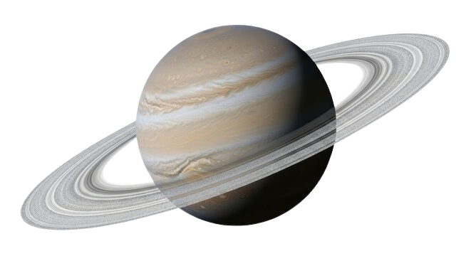
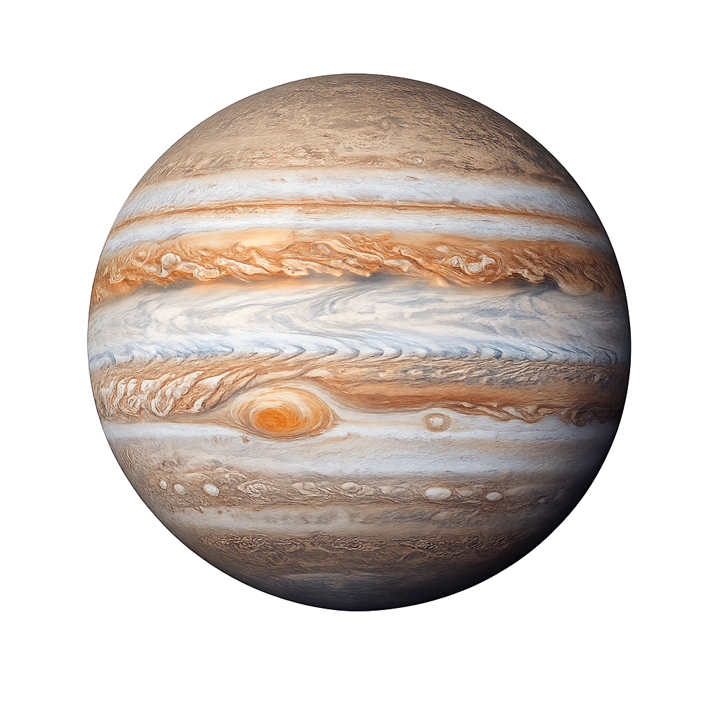
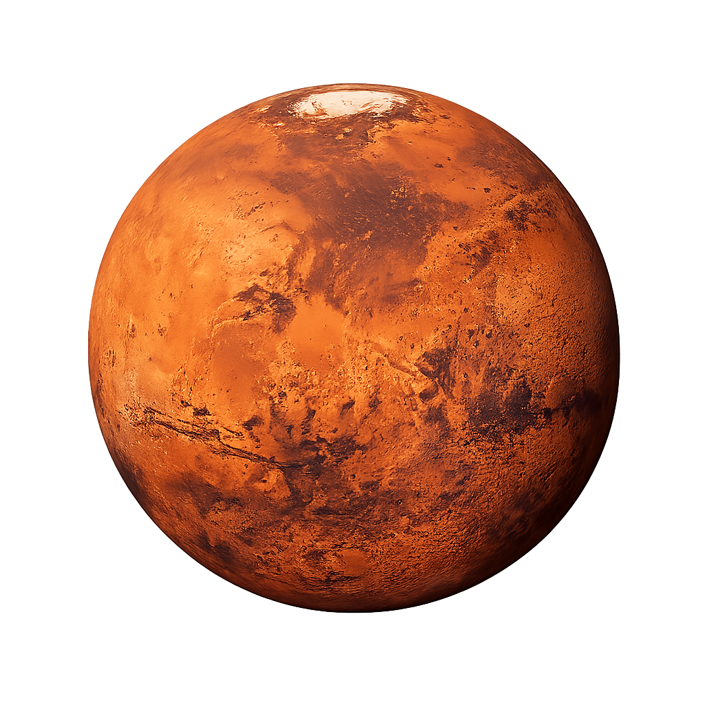

Saturno é o sexto planeta a partir do Sol e o segundo maior do Sistema Solar, conhecido principalmente por seu espetacular sistema de anéis. É um gigante gasoso, composto majoritariamente por hidrogênio e hélio, sem uma superfície sólida definida.

Júpiter é o maior planeta do Sistema Solar, tão volumoso que caberia mais de mil Terras dentro dele. Sua Grande Mancha Vermelha é uma tempestade que dura há mais de 350 anos.

Chamado de Planeta Vermelho por sua superfície avermelhada rica em óxido de ferro, Marte abriga o Monte Olimpo — o vulcão mais alto do sistema solar, com 21 km de altitude.